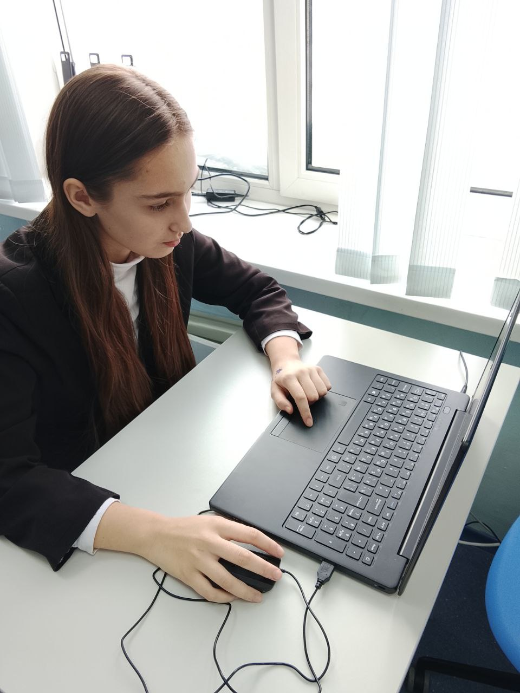
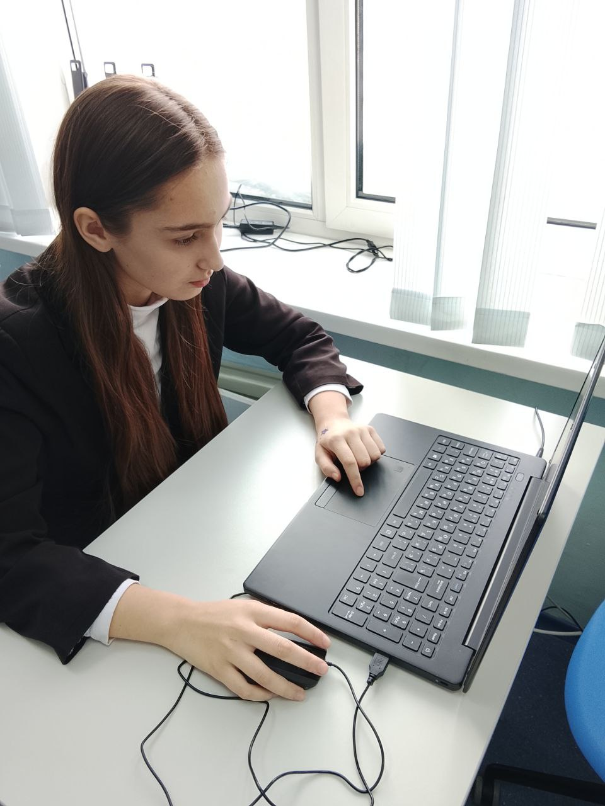

Наша школа
Ляминская средняя общеобразовательная школа
Официальный сайт школыE-mail: lyamina_school@mail.ru
Проектная работа команды
Мы — команда, которая объединяет математику, информатику и географию, чтобы исследовать мир через данные, карты и алгоритмы.

Официальный логотип конкурса
Информация об образовательной организации и руководителе команды.
Ляминская средняя общеобразовательная школа
Официальный сайт школыE-mail: lyamina_school@mail.ru
Журавлева Марина Николаевна, учитель математики
E-mail: lsoshmaths@gmail.com
Личный сайт руководителя (если есть)Ссылки на личные сайты (если есть) и роли в проекте.
Коллективное фото или коллаж с лицами участников.
.png) 

.png)
Эссе о том, почему мы участвуем в проекте и как информатика связана с географией.
Информатика для нас — это язык, на котором можно рассказывать о мире. Мы учимся собирать данные, видеть закономерности и превращать их в карты, модели и истории. География помогает чувствовать пространство, а алгоритмы дают инструменты, чтобы это пространство понять и бережно исследовать.
Когда мы изучаем математику и информатику, мы открываем для себя удивительную логику, которая стоит за каждым явлением природы и общества. Геоинформационные системы позволяют нам визуализировать данные о рельефе, климате, населении и ресурсах, делая сложное понятным и наглядным. Это не просто цифры в таблицах — это живая модель планеты, которую можно анализировать, чтобы принимать обоснованные решения и прогнозировать будущее.
Мы восхищаемся тем, как информатика помогает географии стать точной наукой. Спутниковые снимки, глобальные базы данных, навигационные приложения и системы мониторинга окружающей среды — всё это результат слияния информационных технологий и географических знаний. В нашей школе мы стремимся понять эти процессы на практике: строим модели, работаем с реальными данными, учимся программировать и представлять информацию так, чтобы она была полезна и понятна другим людям.
Участие в проекте «Компьютерная фантазия» — это возможность проявить себя, показать, что современная школа готовит не просто исполнителей, а мыслящих специалистов, способных решать сложные задачи. Мы хотим доказать, что география и информатика неразделимы в эпоху больших данных и умных технологий. Нам нравится мыслить точно, творчески и вместе, потому что только так рождаются по-настоящему значимые идеи.
Информатика учит нас анализировать, структурировать и оптимизировать. География учит видеть взаимосвязи, понимать масштабы и ценить разнообразие мира. Вместе эти науки делают нас ответственными исследователями, готовыми внести вклад в развитие технологий и сохранение нашей планеты для будущих поколений.
Мотиватор о географии и информатике, выполненный в Words Cloud.
Навигация по материалам проекта «Компьютерная фантазия»